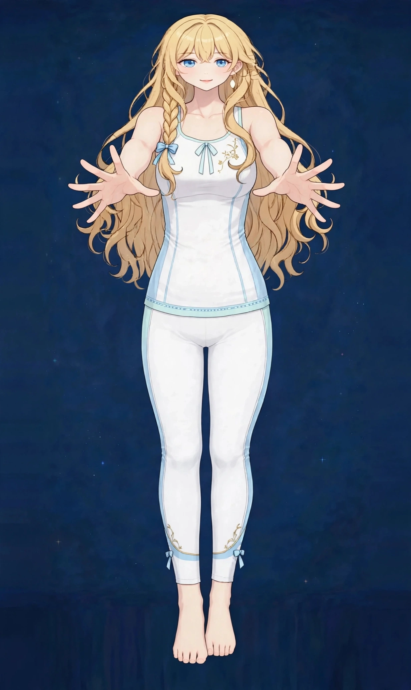

梅田で二の腕のたるみケア｜美容整体で腕のラインと姿勢にアプローチ｜ステラポラリス 梅田・女性専用美容・見た目
半袖やノースリーブの季節になると気になる、二の腕のたるみ。腕を振ったときの揺れ感が気になるという声も多くあります。当店には「腕・手の疲れ」のページもありますが、このページでは疲れではなく「ラインの見え方」に絞って解説します。
二の腕のたるみはどこに出るか
二の腕のたるみが出やすいのは、腕の後ろ側から脇にかけての部分です。この部分の筋肉は、日常生活では荷物を持つ・運ぶといった動作で前の筋肉ほど使われず、働く機会が少ないまま張りを失いやすい場所です。
さらに、巻き肩で肩が内側へ入る姿勢では、腕の後ろ側が縮んだまま固定され、ラインがもたついて見えます。腕そのものだけでなく、肩の位置と姿勢が、二の腕の見え方を左右します。図1で、たるみの出やすい場所を確認してみてください。
二の腕の見え方は、腕の太さそのものより、肩から腕へのラインのつながりで決まる部分も大きいものです。肩が前に出た姿勢では腕は短く太く見え、背筋が伸びた姿勢では同じ腕でもすっきり見えます。腕単体ではなく、上半身全体の中で眺める視点が大切です。
こんなサインはありませんか？ — 二の腕のたるみのチェックリスト
- 腕を振ると後ろ側が揺れる感じがする
- 半袖やノースリーブを避けがちだ
- 腕の後ろ側を触るとやわらかく張りがない
- 巻き肩や猫背が気になる
- 腕を上げる動作がしにくい
- 脇まわりにもたつきを感じる
- 写真で腕が太く写るのが気になる
- 肩こりも一緒に気になる
当てはまる項目が多いほど、腕の後ろ側が使われにくい生活と姿勢が続いている可能性があります。次の「要因」と見比べて、自分のパターンを確かめてみてください。
二の腕がたるみやすい要因
- 後ろ側の筋肉の出番の少なさ：腕の後ろ側の筋肉は、ドアを押す、体を支えるといった動作で働きますが、日常では出番が少なく、張りを失いやすい場所です。
- 巻き肩と姿勢：肩が内側へ入る巻き肩では、腕の後ろ側がたるんで見える角度になります。姿勢の崩れは、二の腕の見え方に直接つながっています。
- 脇まわりの巡りの滞り：脇の下はリンパの集まる場所として知られ、巡りが滞るともたつきが出やすくなります。腕を下ろしたままの姿勢が続くことも要因です。
- 肩甲骨まわりが動いていない：腕の付け根は肩甲骨と連動しています。肩甲骨まわりが固まっていると、腕全体の動きが小さくなり、後ろ側の筋肉も働きにくくなります。
- 年齢によるハリの変化：年齢とともに肌のハリや筋肉量が変わり、たるみは出やすくなります。変化は自然なことですが、使い方と巡りの見直しで印象は変わります。
- むくみ：腕全体がむくむと、たるみと重なって太く見えます。夕方に腕が重く感じる方は、むくみの影響も重なっている可能性があります。
図1｜二の腕のたるみが出やすい場所

東洋医学から見た考え方
東洋医学では、腕の後ろ側には三焦経や小腸経が通り、脇から肩甲骨へとつながるとされます。二の腕の見立てでは、この後ろ側のラインの巡りと、肩甲骨まわりの動きをあわせて眺めます。
巡りの滞りは、冷えや同じ姿勢の継続で起こりやすくなります。施術では、腕だけでなく、脇から肩甲骨、背中にかけてのラインをほぐし、腕全体の巡りを助ける進め方を取ります。
代表的なツボ
二の腕のケアでよく挙げられる、腕の後ろ側のツボを紹介します。自分では触れにくい場所もあるため、反対の手で届く範囲で行ってください。
図2｜二の腕と肩の位置関係
おすすめ施術
美容整体・オイルマッサージ
施術では、まず腕の後ろ側から脇、肩甲骨まわりをオイルマッサージでほぐし、巡りを助けながらラインを整えます。そのうえで美容整体で、巻き肩や肩の位置といった姿勢の土台に触れながら、上半身全体のバランスを整えていきます。
二の腕のラインが整って見えるようアプローチするには、腕そのもののケアと、肩の位置を決める姿勢の見直しの両方が必要です。施術の前後では、腕を上げたときのラインを鏡で見比べます。
腕の疲れやだるさも気になる方は、その配分も調整できます。90分の中で、腕から肩、背中までを一続きでケアできるのが当店の進め方です。
自宅でできるセルフケア
二の腕のセルフケアは「巡りを助ける・後ろ側を使う・姿勢を整える」の組み合わせが基本です。痛みが出る場合は無理をせず中止してください。
- 1．脇から腕へのなで下ろし脇の下から肘へ向けて、手のひらでやさしくなでるケアを左右10回ずつ。巡りを助ける基本の動きで、お風呂上がりがおすすめです。
- 2．壁を使った腕の後ろ側の運動壁に手をついて体を近づけたり離したりする小さな動きを10回。腕の後ろ側の筋肉を使う練習です。
- 3．肩甲骨まわりのストレッチ両手を背中で組む、またはタオルを両手で持って上下に動かすストレッチを。肩甲骨が動くと、腕の付け根の動きも広がります。
- 4．腕を上げる習慣洗濯物を干す、高い棚を使うなど、腕を上げる動作を日常に増やすこともケアの一部です。小さな積み重ねが後ろ側の張りを保ちます。
図3｜肩甲骨まわりと腕の付け根

場面別の注意
半袖の季節の前
腕を出す季節の前は、数週間前から施術とセルフケアを組み合わせる使い方がおすすめです。直前だけのケアより、巡りと姿勢を整える積み重ねがラインに表れます。
デスクワークの日
腕を下ろしたままの姿勢が続く日は、時々腕を上げて回すリセットを。脇まわりの巡りを滞らせない小さな習慣です。
ブライダルや写真の予定の前
ドレスや写真で腕が見える予定の前は、二の腕とデコルテ、背中を一緒に整える組み立てができます。ブライダルのページもあわせてご覧ください。
受診の目安
次のような場合は、サロンでのケアの前に医療機関への受診をおすすめします。
- 腕にしびれがあり、力が入りにくい
- 肩が痛くて腕が上がらない状態が続いている
- 脇や腕にしこりや腫れがある
- 片腕だけ急に太くなった、むくみに左右差が大きい
- 発熱を伴う腕の痛みや腫れがある
当店は医療機関ではなく、診断は行いません。迷うときは、まずかかりつけの医療機関にご相談ください。
よくある質問
Q．「腕・手の疲れ」のページと何が違いますか？
あちらはデスクワークや家事による疲れ・だるさの悩み、こちらはたるみやラインといった見え方の悩みを扱います。両方気になる場合は、当日の状態に合わせて配分を調整します。
Q．腕は細くなりますか？
サイズの変化をお約束するものではありません。巡りや張りが整い、姿勢が変わることで、ラインがすっきり見えるようアプローチするケアです。
Q．痛い施術ですか？
二の腕の後ろ側は敏感な方も多いため、力加減を確認しながら進めます。痛みをがまんする施術ではないので、遠慮なくお声がけください。
Q．肩こりも一緒に相談できますか？
はい。肩の位置と二の腕の見え方はつながっているため、肩こりが強い場合はそちらの配分も含めて組み立てます。
関連するお悩みページ
関連する経絡ページ
ご予約
ステラポラリス（大阪・梅田／女性専用）｜美容整体・オイルマッサージ 90分 10,000円｜月〜土 17:00〜22:00・完全予約制
ご予約はLINE公式アカウントで受け付けています。希望の日時と、気になる場所を送ってください。